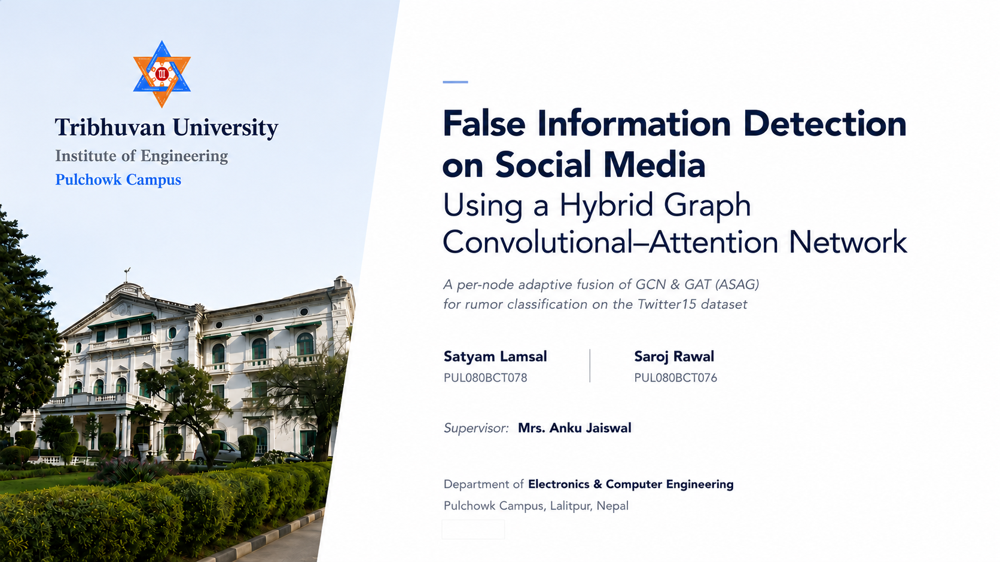
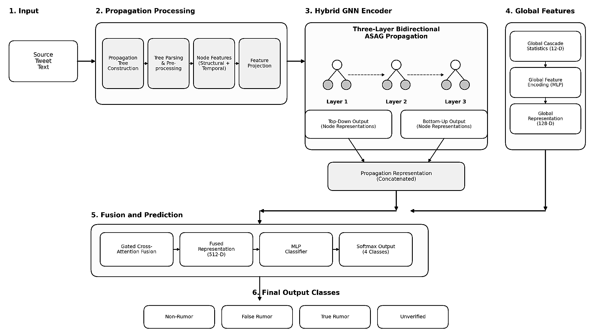
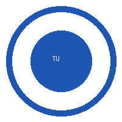

01Motivation
02Problem statement
03Dataset
04Algorithms — GCN & GAT
05Proposed model — ASAG
06Architecture & parameters
07Results & comparison
08Conclusion & future work

Why detecting false information requires understanding both what was said and how it spread.
Build a deep-learning framework that classifies false information by integrating the source post's content with the propagation structure of its information cascade.
Roughly balanced (~25% each) — evaluated with class-weighted loss and macro-F1.
Due to platform terms, only the source tweet carries text. Every reply is just [user, tweet_id, delay] — no words.
Because of this absence of reply text, relying on only the source text and the propagation structure reduced the accuracy a model could reach on this data.
We squeezed the discriminative signal out of how the claim spreads — depth, timing, branching, hubs — to still reach a decent accuracy:
Averages the neighbours (degree-normalized). Calm & stable — great at damping a flood of near-identical late retweets.
Learns an attention weight per neighbour. Sharp & selective — spotlights the pivotal early reply.
Adaptive per-node fusion of GCN and GAT representations for bidirectional rumor-propagation learning.
| Symbol | Definition |
|---|---|
| hᵢgcn | Node embedding from Graph Convolutional Network branch; uniform neighbourhood aggregation |
| hᵢgat | Node embedding from Graph Attention Network branch; attention-weighted aggregation |
| gᵢ ∈ (0,1) | Scalar gate value estimated per node via sigmoid over concatenated branch outputs |
| hᵢ | Final fused representation; convex combination governed by gᵢ |
Its gradient ∝ (hgat − hgcn) — the difference between branches. Every step nudges it toward whichever was more correct at that node.
Gate bias initialized to −0.5 (mean ≈ 0.38), so it leans on the robust GCN early and shifts to attention only where it helps.
The mean gate is logged, giving a readable measure of how much the model relied on structure vs attention.

Each captures when a node posted, how deep it sits, and how much reply it drew — then projected to 64-d.
A bird's-eye summary of the whole tree, encoded to 128-d and injected before the classifier.
The classes are imbalanced and the minority ones (False / Unverified) matter. Macro-F1 makes a rare class count as much as a common one.
Does the adaptive gate actually pay off? A controlled, 5-fold comparison against both standalone operators.
| Backbone | Accuracy | Macro-F1 |
|---|---|---|
| GCN | 0.8423 | 0.8434 |
| GAT | 0.8523 | 0.8524 |
| Hybrid (ASAG) ★ | 0.8591 | 0.8600 |
We combine content and propagation to detect false information.
GCN and GAT capture complementary signals in a rumor cascade.
ASAG adaptively fuses them per node, leading to the best overall performance.
Understanding how information spreads is as important as what the information says.

Hybrid GCN–GAT (ASAG) for false-information detection on Twitter15